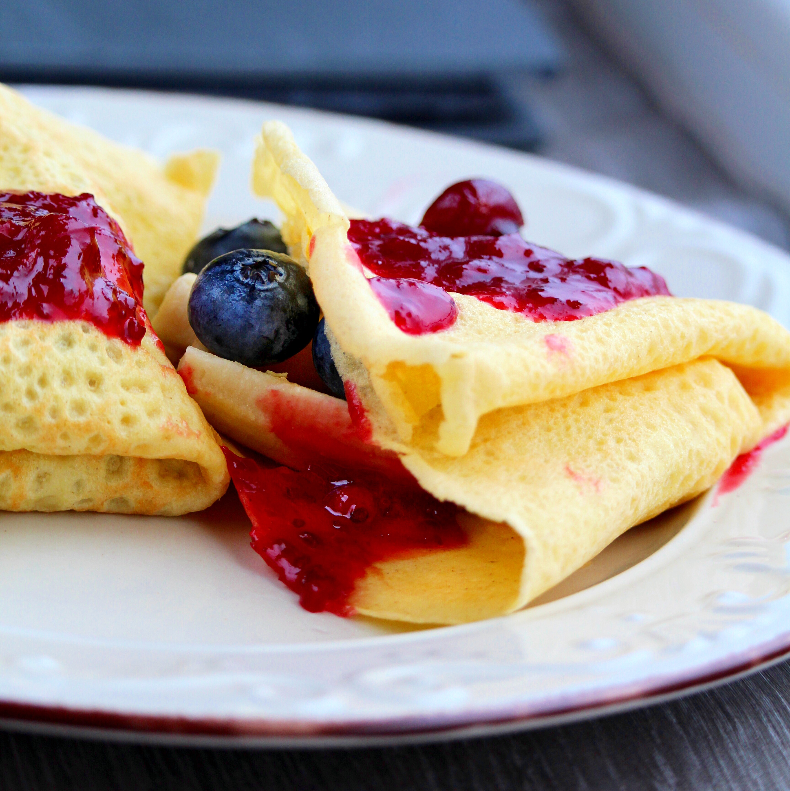

Gluten Free Crepes

Great tasting gluten-free crepe recipe. Works well every time.
This is a quick and easy dessert for the celiacs in your life. It only takes 10 minutes to prep
and around an hour to complete. It goes well with ice cream, fruit and yogurts.
Ingredients:
- 1 cup rice flour
- 3 large eggs
- ½ cup almond milk
- 3 tablespoons white sugar
- 1 pinch salt
- cup warm water
- 3 ½ tablespoons coconut oil, divided
Steps:
- Whisk rice flour, eggs, almond milk, sugar, and salt together in a large bowl until well mixed.
- Combine water and 3 tablespoons coconut oil in a separate bowl until well blended. Whisk into the flour mixture. Pour batter through a sieve into a clean bowl; cover with plastic wrap and refrigerate for 1 hour.
- Heat remaining coconut oil in a griddle over medium heat. Ladle a portion of the batter into the pan and spread out. Cook until set, about 30 seconds per side. Repeat with the remaining batter.
Go back